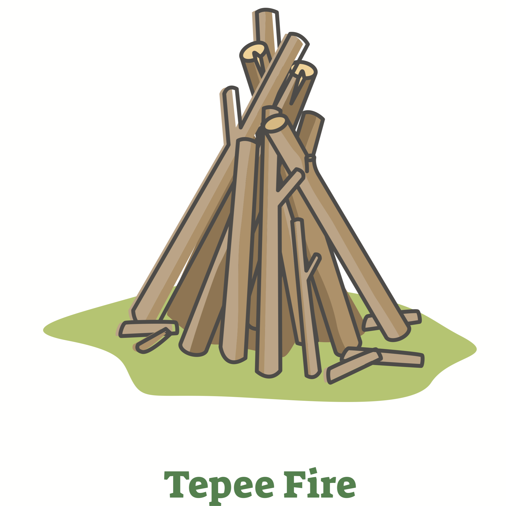
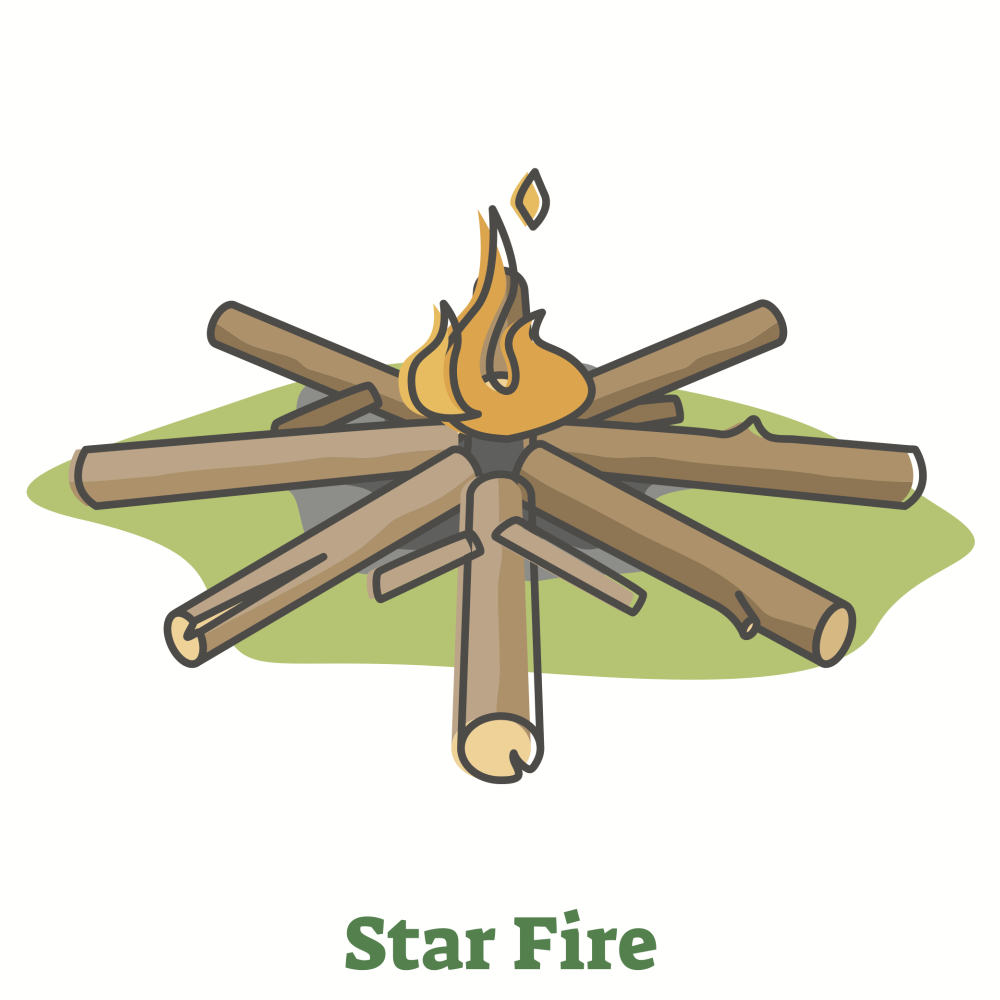
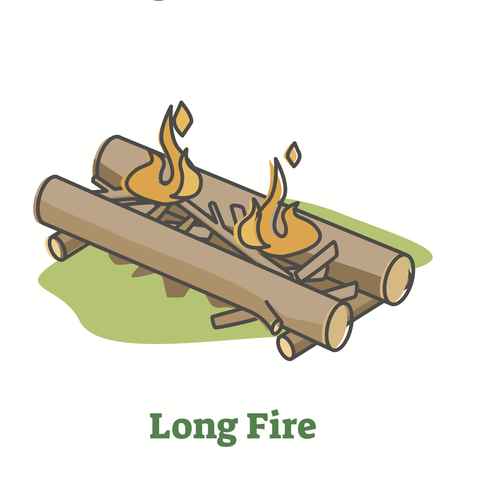
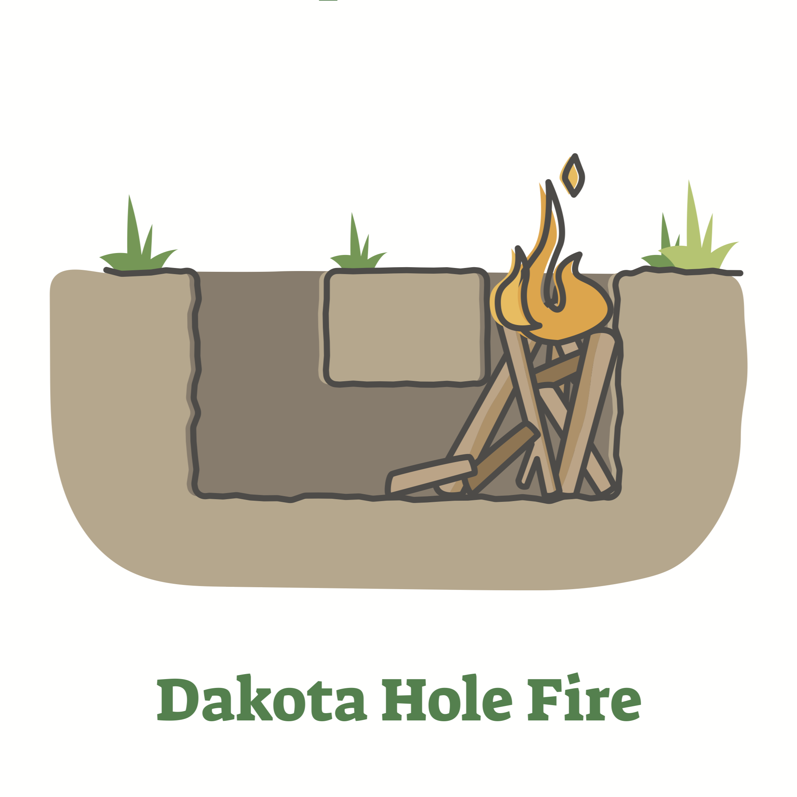
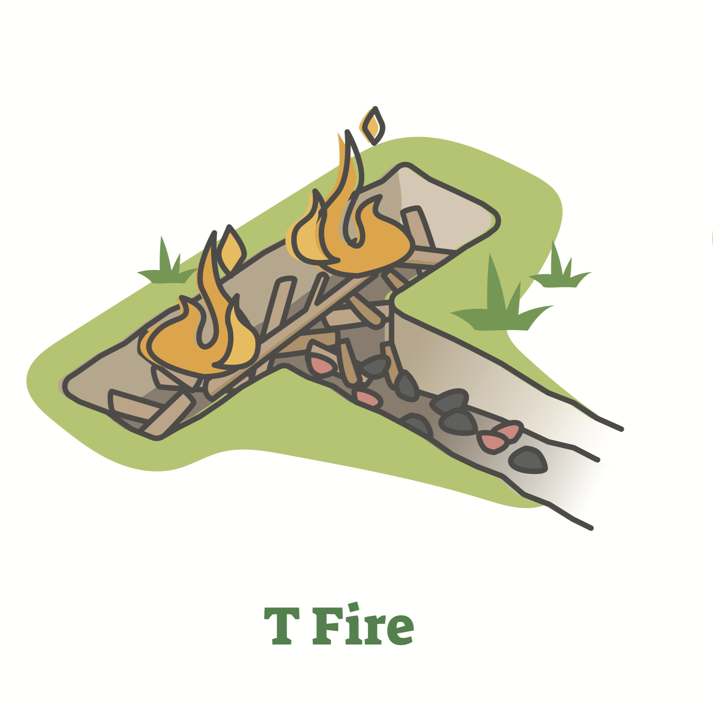
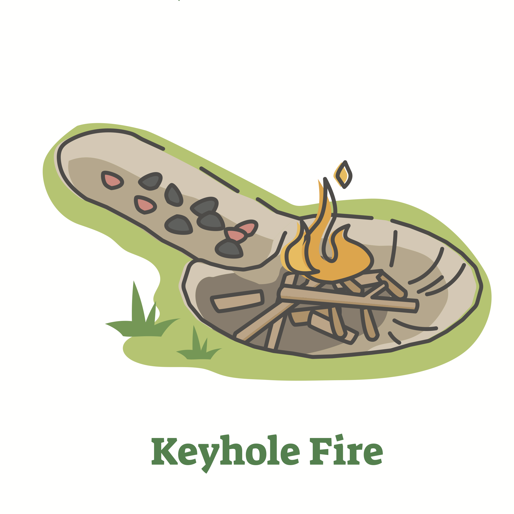

Log Cabin Fire

A Log Cabin Fire is a type of campfire that is constructed by stacking logs in a square or rectangular shape, resembling a small log cabin. This design creates a structure with good airflow, allowing for a steady and efficient burn. Here's how to build a Log Cabin Fire:
Tepee Fire
A Tepee Fire is a classic campfire design that resembles a cone or tepee shape. This type of fire is known for its simplicity and efficiency in quickly generating heat. It is commonly used for warmth and light during camping trips. Here's how you can build a Tepee Fire:
Star Fire
A Star Fire is a campfire design that resembles a star or asterisk shape. This visually appealing arrangement not only provides warmth but also adds an interesting aesthetic to the campsite. Here's how you can build a Star Fire:
Prescribed Fire

A Prescribed Fire, also known as a controlled burn or prescribed burn, is a deliberately set fire conducted under controlled conditions to manage vegetation, reduce wildfire risks, and promote ecosystem health. This practice is commonly used in forestry, agriculture, and land management. Here are key aspects of Prescribed Fires:
Long Fire
If you're referring to a "long fire" in the context of a campfire or outdoor fire, it may be a term used to describe a fire that extends over a relatively long area or has a linear shape. Creating a long fire can be practical in certain situations, such as providing warmth along a seating area or accommodating a larger group of people.
Dakota Hole Fire
The Dakota Fire Hole is a type of campfire design that originated from Native American practices and is particularly useful in windy conditions. This method involves digging a hole in the ground to create a concealed fire pit with a connecting tunnel for increased airflow. The Dakota Fire Hole offers several advantages, including reduced visibility and efficient fuel consumption. Here's how you can create a Dakota Fire Hole:
T Fire
The T Fire, also known as the Cross Fire, is a campfire arrangement that resembles the letter "T." It is a simple and effective design that provides a steady flame, making it suitable for cooking and warming up in outdoor settings. Here's how you can create a T Fire:
Keyhole Fire
A Keyhole Fire, also known as a Keyhole Fire Pit, is a versatile and practical campfire design that consists of two main parts: a circular fire ring and an elongated trench or "keyhole" extending from it. This design allows for both open flames and a controlled cooking area. The circular section is used for the main fire, while the trench serves as a dedicated space for cooking. Here's how you can create a Keyhole Fire: